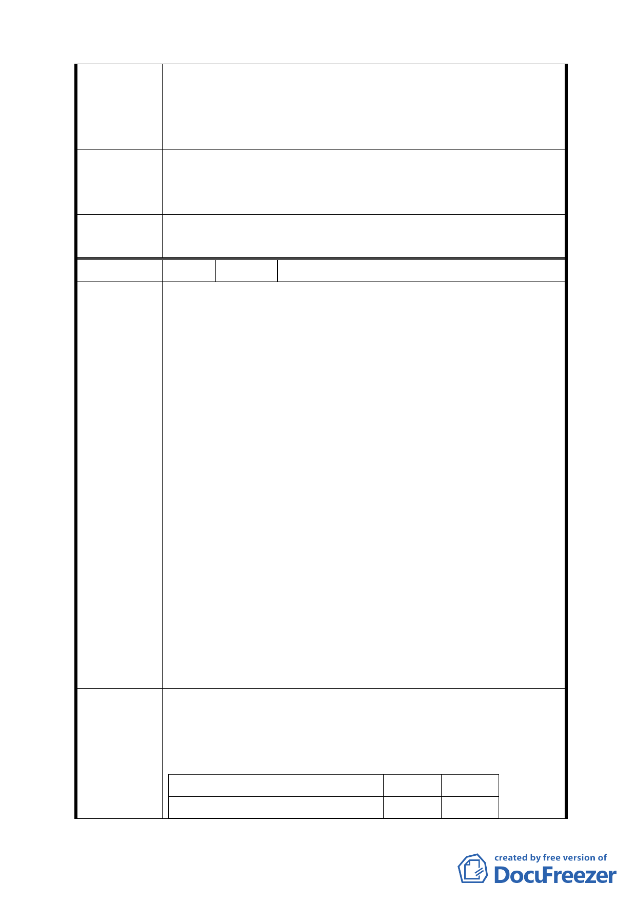

及行人皆會從『視點』相背方向見到相反的一面。因此，
樓高規劃，宜從四面八方觀察、設想，求取美觀、舒適。
由『視點』設定之『階梯型』樓高限制，應重新考慮。或
參考鄰近樓高，以一般建築法規為準。
貴會於 93 年 6 月 3 日第 529 次會議審議通過之原計畫案，實
建 議 辦 法 無不妥處；唯一要變更的是取消國中用地；如能將原計畫案
中該預定地直接移轉為公園用地，也是合情合理。
委員會決議
依市府所送「第 574
料」修正後通過。
次臺北市都市計畫委員會議決議回應資
編 號 ５ 陳情人 臺北市北投區公所
一、建議位置：
臺北市北投區奇岩新社區細部計畫案示意圖 R9、R13 二
塊基地。
二、建議理由：
本行政中心於民國 71 年啟用迄今，已屆 25 年，目
前合署辦公單位計有臺北市北投區戶政事務所、臺北市
監理處北投區服務站、北投社會福利服務中心、臺北市
勞工局就業服務中心北投就業服務站、士林地政事務所
北投地政工作站、臺北市稅捐稽徵處北投分處、財政部
陳情理由
臺北市國稅局北投稽徵所等單位。因建物老舊年久失
修，礙於預算多年來僅能局部修漏，牆壁龜裂，鋼筋暴
露，耐震能力不足，已判定需結構補強，補強後亦僅剩
餘年限約 20 餘年，為機關長治久安，實有遷建需要。
另有鑒於本行政中心 1、2 樓尚有市場攤販營業，周
邊衛生環境條件極差，民眾迭有微詞，且尚有北投區健
康中心、陽明醫院門診中心、北投清潔隊等單位無法進
駐聯合服務，致使本區民眾常需奔波往返，無法達成一
處全程服務的目標，實與市長市政白皮書─建構區級服
務型政府之政策相違背。
目前市府有北投奇岩新社區都市計畫開發案，本所亟盼能於案
址內規劃興建行政中心，俾能提供優質服務，以符民意需求。
預計行政中心總計需用 7,490.39 坪，各合署單位需求面積如
建 議 辦 法 附表。
單 位 需求坪數 備 註
臺北市北投區公所
4,000
13